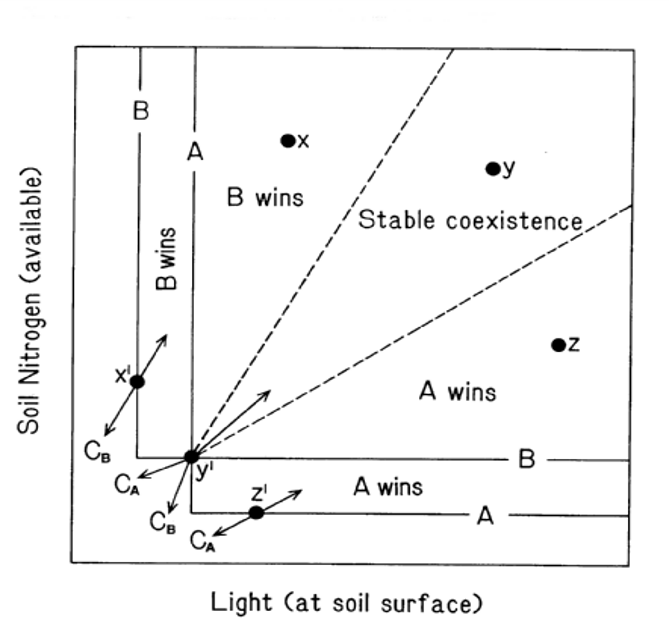
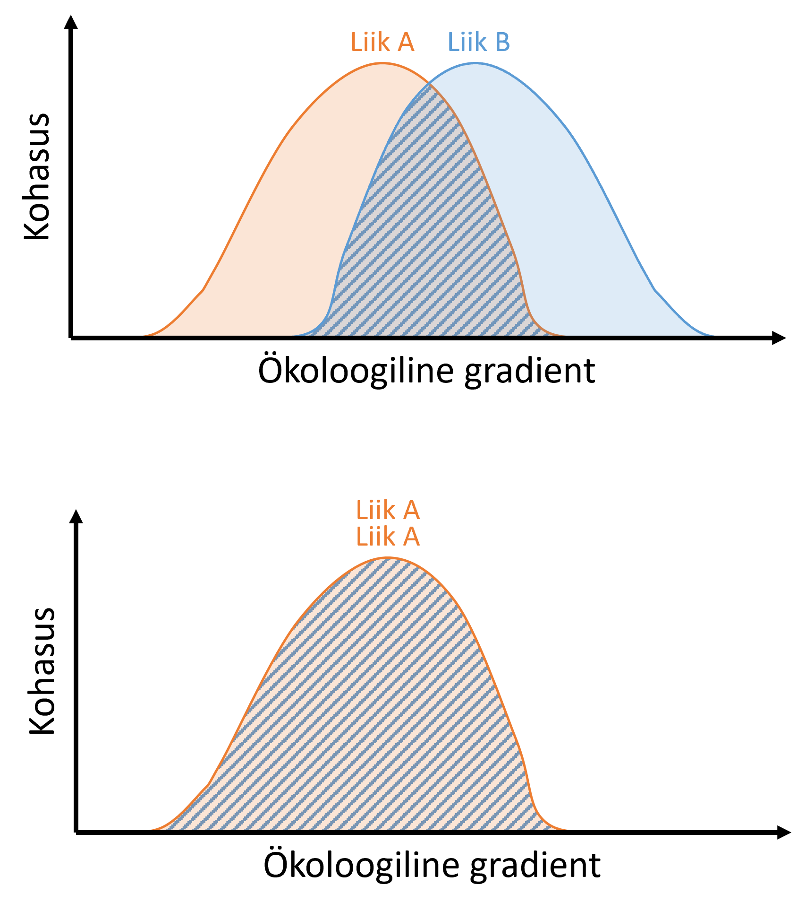

Kooseksisteerimise teooriad
Ökoloogia üks peamisi probleeme/eesmärke on olnud saada aru sellest, mis tingimustel mingid liigid koosluses koos elada saavad.
Peaasjalikult algas teoreetiline töö selle küsimusega 20. sajandi I veerandil ehk umbes täpselt 100 aastat tagasi. Ameeriklane Alfred James Lotka (1925) ja itaallane Vito Volterra (1926) pakkusid enam-vähem samaaegselt välja matemaatilise raamistiku kirjeldamaks seda, kuidas kaks liiki interakteeruvad ning konkureerivad samadele limiteerivatele ressurssidele.
Lotka-Volterra võrrandid:
\[\frac{dN_1}{dt} = r_1 N_1 \left( \frac{K_1 - N_1 - \alpha_{12} N_2}{K_1} \right)\]
\[\frac{dN_2}{dt} = r_2 N_2 \left( \frac{K_2 - N_2 - \alpha_{21} N_1}{K_2} \right)\]
, kus:
\(N_1\) ja \(N_2\) on liikide 1 ja 2 populatsiooni arvukus
\(r_1\) ja \(r_2\) on kummagi liigi “loomuomane” populatsiooni kasvukiirus
\(K_1\) ja \(K_2\) on keskkonna kandevõime kummagi liigi suhtes (maksimaalne liigi populatsiooni arvukus, mis keskkonda [ehk kasvukohta, ökosüsteemi, vms] ressursside poolest mahub, eeldusel, et teist liiki üldse pole)
\(\alpha_{12}\) on liigi 2 konkurentne mõju liigile 1. Näituseks, kui \(\alpha_{12} = 2\), siis tarbib üks liigi 2 indiviid kahe liigi 1 indiviidi ressursi
\(\alpha_{21}\) on liigi 1 konkurentne mõju liigile 2
Stabiilselt kooseksisteerimiseks on vajalik täita kriteerium: \(K_1 < \frac{K_2}{\alpha_{21}}\) ja \(K_2 < \frac{K_1}{\alpha_{12}}\) , mis lihtsustatult tähendab, et liigisisene konkurents peab olema tugevam kui liikidevaheline konkurents. Ehk iga liik peab omaenda populatsiooni kasvu piirama (ressursside äratarbimisega, territoriaalsusega, vms) rohkem kui konkureeriva liigi populatsiooni kasvu.
Huvitaval kombel olid Lotka ja Volterra vastavalt matemaatik-füüsikaline keemik ja matemaatik-füüsik, mitte bioloogid.
Sellest raamistikust inspireerituna tegi vene bioloog G. F. Gause (1934) hulga katseid kingloomadega (Paramecium), mille käigus ta demonstreeris Lotka-Volterra võrrandite paikapidavust mittestabiilse kooseksisteerimise korral.
Nimelt kasvatas ta kahte esiteks kahte liiki, P. aurelia ja P. caudatum, eraldi katseklaasides, söötes neile kindla mingit bakterisegu. Kummagi liigi populatsioon kasvas eraldi eksponentsiaalselt seni, kuni jõudis keskkonna kandevõimeni \(K\), ehk siis populatsiooni suuruseni, mil ressurssi rohkemate isendite ülalpidamiseks enam ei jahunud.
Järgmiseks pani Gause kahte liiki kingloomad sama algse populatsiooni suursega kokku ühte katseklaasi ja andis neile sama bakterisegu samas ratsioonis. Juhtus see, et pärast algset mõlema populatsiooni kasvu rauges P. caudatum populatsiooni kasv ning populatsioon langes lõpuks 0 isendini. Miks? Sest et P. aurelia oli kergelt parem konkurent - leidis bakterid paremini üles ja sõi nad kiiremini ära. Kuna kumbki liik kasutas sama ökoloogilist nišši (vees hõljuvate bakterite söömine), tõrjus üks liik teise välja.
Ja vähe sellest, Gause tegi ka teise katse, kus ta pani koos samasse katseklaasi kasvama juba eelmisest loost tuttava kinglooma, P. caudatum, kes toitub, nagu enne mainitud, vees hõljuvatest bakteritest, ning uue kinglooma, P. bursaria, kes toitub veekolonni põhja settivatest pärmidest. Juhtus see, et mõlemad liigid püsisid katseklaasis pikaajaliselt koos. Miks? Sest et liikide nišid (toitumiseks kasutatav veekolonni osa) olid erinevad.
Sellest johtuvalt sõnastas ta Gause printsiibi (1934), mis väidab, püsivaks kooseksisteerimiseks peavad liigid erinema oma bioloogiliste vajaduste või ökoloogiliste niššide poolest.
Sellest omakorda järeldus näiteks, et kasvukohas (ökosüsteemis) kooseksisteerivate liikide arv on võrdne kasvukoha keskkonnaparameetri amplituud jagatud liikide nišiamplituudidega (niši laius, niche breadth) (MacArthur and Levins 1967).
Ressursside suhete hüpotees
Klassikalise kasvukoha nišipõhise jagamise edasiarenduseks võiks pidada Tilmani ressursside suhete hüpoteesi (resource ratio hypothesis). Kui Gause räägib konkurentsist ühele limiteerivale ressursile, siis Tilmani hüpotees väidab, et mitu liiki saab kooseksisteerida, kui nende nõudlused erinevatele ressurssidele on erinevad (ehk neile optimaalsete ressursitasemete omavahelised suhted erinevad) ja kui keskkond neid ressursse vastavas suhtes ka pakub!


Kui liik A on natukene parem konkurent näiteks mullalämmastiku kasutamisel ja liik B natukene parem konkurent näiteks päikesevalguse püüdmisel, võivad need kaks liiki püsivalt kooseksisteerida nende kahe ressursi keskmistel tasemetel. Kui valgust on suhteliselt palju, aga lämmastikku väga vähe, võidab (tõrjub teise liigi lokaalselt välja) liik A, sest et lämmastik on palju limiteerivam ressurss, aga A suudab lämmastikku palju paremini hankida. Kui lämmastikku on väga palju, tõrjub liik B liigi A välja, sest liik B suudab piisava lämmastiku puhul palju paremini konkureerida valguse suhtes (näiteks efektiivselt varjutades, omades suuremat lehe eripinda, vms).
See on muide üks algupärane seletus sellele, miks (vist, vaieldakse) liigirikkus kipub olema kõrgeim keskmiselt produktiivsetes kasvukohtades.
Kahjuks ei seleta need teooriad näiteks ülimalt liigirikaste koosluste esinemist (toopiline mets, erinevad mikrobioomid, jne) - ei ole võimalik leida nii palju erinevaid piirvaid faktoreid või jagada niširuumi nii paljude erinevate liikide vahel, kui koosluses tegelikult on. Tänapäevased kooseksisteerimise teooriad otsivad tegelikult lihtsustatult vastust küsimusele
miks on liigirikkad kooslused hoolimata konkurentsest väljatõrjumisest (Gause printsiip) siiski võimalikud?
Modern Coexistence Theory (MCT)
Nišiteoreetikute töö tulemusena, õigemini niši kontseptsiooni suure taaselustamisena, pakkus Peter Chesson sajandi alguses välja kaasaegse kooseksisteerimise teooria (MCT) (Chesson 2003, 2000). See sedastab, et stabiilse kooseksisteerimise eelduseks on, et liikide ohtrused süsteemis (koosluses, ökosüsteemis) ei ilmuta pikaajalisi trende. See tähendab, et stabiilseks kooseksisteerimiseks peab iga liik suurma madalast ohtrusest taastuda, samal ajal ülejäänud kooslusega interakteerudes. Formaalselt on stabiilne (st stabiilselt, pikaajaliselt püsiva elurikkusega) kooslus krjeldatud sääraselt: iga koosluse liigi populatsiooni kasvukiirus on madala arvukuse juures positiivne, st iga liik suudab madala arvukuse juures konkurentide ekviliibriumkooslust invadeerida - mutual invasion criterion.
(Konkurentide koosluse) invadeerimise võime sõltub liikidevaheliste nišierinevuste ja kohasuste (ökoloogilises mõttes - konkuretsivõime) erinevuse koosmõjust.

Liikidevahelist kooseksisteerimist kujundavad MCT järgi stabiliseerivad ja võrdsustavad mehhanismid.
Stabiliseerivad mehhanismid
Stabiliseeriv mõju tuleneb otseselt liikidevahelistest funktsionaalsetest (e niši-) erinevustest, mistõttu liigisisene limiteeriv mõju (= konkurents) on suurem kui liikidevaheline.

Chessoni teoorias on stabiliseerivate mehhanismide seas äärmiselt oluline nähtus nimega stabiilne varu (storage effect). See seletab, kuidas konkureerivad liigid saavad kooseksisteerida tänu keskkonnafluktuatsioonidele, mitte niivõrd ressursiniši jagamisele. Teisisõnu eristuvad liigid mitte nende ressursside poolest, mida nad kasutavad, vaid selle poolest, millal või kus nad samu ressursse kõige aktiivsemalt kasutavad.
Selleks on vajalik täita kolm tingimust:
Erinevatel liikidel peab oleme diferentseerunud vastus keskkonnale. Näiteks liik A kasvab paremini kuivematel, liik B paremini märjematel suvedel.
Keskkonnaparameetrite ja konkurentsi tugevuse vahel on korrelatsioon. Korrelatsioon stabiliseeriva niši limitatsiooni mõttes - kui liigil A on hea (kuivem) aasta, kasvab tema populatsioon kiiresti. Suurenenud populatsioon aga tähendab, et liik A kogeb liigisiseselt suuremat isenditevahelist konkurentset survet kui see oleks kehval aastal, kui populatsiooni tihedus on väiksem.
Liikide populatsioonidel peab olema kasvu puhver. Liik peab olema võimeline “kehvad” ajad (st mil tema kohasus on suhteliselt väiksem) üle elama - näiteks seemnepangana mullas, puhkestaadiumis munadena, pikaealiste täiskasvanud isenditena.

Võrdsustavad mehhanismid
Võrdsustavad mehhanismid vähendavad liikidevahelist kohasuste erinevust - teisisõnu on need mingid mõjud, mis kas suruvad alla muidu parema konkurendi konkurentsivõimet või tõstavad muidu kehvema konkurendi konkurentsivõimet.
Lihtne näide võrdsustavast mehhanismist on päiskiviliik, näiteks tarbija, kes sööb muidu domineerima kippuvat liiki, vähendads viimase (ökoloogilist) kohasust.
Siinkohal tore näde sellest kuidas mutualisti ja patogeeni olemasolu süsteemis võib olla mingile troofilisele tasemele võrdsustava mõjuga (Albornoz et al. 2017).
Nimelt on Austraalias hulk väga fosforivaeseid ökosüsteeme (fosforivaesed on harilikult vanad troopilised mullad), kuhu on evolutsioneerunud kasvama väga omapärase juurearhitektuuri - klasterjuurtega - taimed näiteks prootealiste sugukonnast.

Fosforiühendid on mullas väga väheliikuvad, mistõttu ülitihedate klasterjuurte omamine annab fosforivaestes muldades väga suure konkurentsieelise. Ometigi kooseksisteerivad needsamad prootealised looduslikes kooslustes mitmete teiste toitumistüüpidega taimedega, näiteks ektomükoriissed mürdilised.
Olgugi, et ka ektomükoriisa aitab tublisti kaasa igasuguste toitainete omastamisele, ei ole see siiski fosfori omastamisel nii tõhus kui klasterjuured. Kuidas siis on nii, et prootealised kõiki teisi liike kohe välja ei tõrju?
Ilmneb, et erinevat tüüpi liikide vaheline konkurents sõltus sellest, kas süsteemis on patogeen. Patogeenivabas keskkonnas olid prootealised mürdilistega samas potis kasvades selgelt konkurentsivõimelisemad. Kui aga süsteemi lisati looduslikule kasvukohale omane juurepatogeen, võrdsustus klasterjuurtega ja ektomükoriissete taimeliikide konkurentsivõime, kuna ektomükoriisne seenmantel pakub juurele head kaitset patogeeni vastu.
Tegemist on klassikalise konkurentsivõime ja kaitse vahelise lõivsuhtega! Lihtsalt selle nüansiga, et kaitset pakub mutualistlik kolmas osapool.

Samal ajal, kui Chesson enda teooriat arendas ja tutvustas, toimus kooseksisteerimise mõistmisel paralleelselt paradigmamuutus, mis pakkus alternatiivi senistele selgitustele. Nimelt hüpotiseeris Hubbell (2001) oma neutraalse teooriaga, et kooseksisteerimiseks ei ole niššidevahelisi erinevusi üldse vaja. Tema väitis, et liigid kooseksisteerivad seetõttu, et nende demograafilised parameetrid (st näiteks populatsiooni kasvukiirused) on hoopis nii sarnased, et liikidevahelised interaktsioonid on kõikidele liikidele praktiliselt sama tugeva mõjuga. Elurikkust saab seega seletada hoopiski stohhastiliste (st juhuslike) sündmuste jadana, mistõttu mõned populatsioonid satuvad domineerima ning mõned surevad välja.
Liigifondi teooria
Chessoni MCT (kaasaegne kooseksisteerimise teooria) vaatleb elurikkust koosluses toimuvate, niši- ja konkurentsipõhiste aspektist ning Hubbelli neutraalne teooria postuleerib, et koosluses toimuvad protsessid ja sellest johtuv liigirikkus on puhtalt juhusliku iseloomuga.
Umbes kümme aastat enne Chessoni ja Hubbelli vahelist mõõduvõttu hakkas pead kergitama elurikkuse teooria, mis samuti postuleeris, et koosluse liigilist koosseisu ei kujunda nii väga kohalikud liikidevahelised interaktsioonid, vaid liigifondisuurus. Liigifond on hulk kõikidest regioonis olemasolevatest liikidest, kes on võimelised antud kasvukohas elama.


Sealjuures võib liigifondi kujunemist ja sellest johtuvat elurikkust vaadelda kahel eri tasemel:
- Liigifondi hüpotees I: kooseksisteerivate liikide arvu määrab liigiteke ja ajalooline migratsioon

- Liigifondi hüpotees II: kooseksisteerivate liikide arvu määrab diaspooride (leviste) kättesaadavus (levik maastikes ja kooslustesse)

Liigifondi teooria võlu seisneb selles, et erinevalt Chessoni ja Hubbelli teooriatest ei välista see oma postulaatide poolest tegelikult kumbagi protsessi. Kuigi liigifondi teooria tegeleb peaasjalikult liikide jõudmisega kooslusesse, ei eeldata liikide võrdset hakkamasaamist või ainult juhuslike protsesside toimumist koosluses. Liigifondist kohale jõudnuna võivad liigi püsimist koosluses endiselt kujundada ka biootilised interaktsioonid (konkurents, aga ka mutualistlikud interaktsioonid).